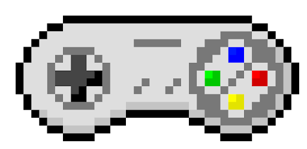

En 1990, Nintendo sort la SNES (Super Nes), l’évolution de la Super Nintendo possédant des jeux en 16 bit cette fois ci. On retrouvera dessus le tout premier Mario kart, le premier Donkey Kong country et le premier Yoshi Island. Super Mario bros aura droit à un nouveau jeu également : super Mario world.
La console est encore est toujours programmée en Assembly language.
La RAM (mémoire vive) de la console s’élève à 128Ko.
